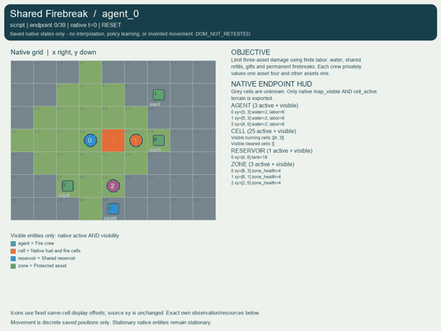
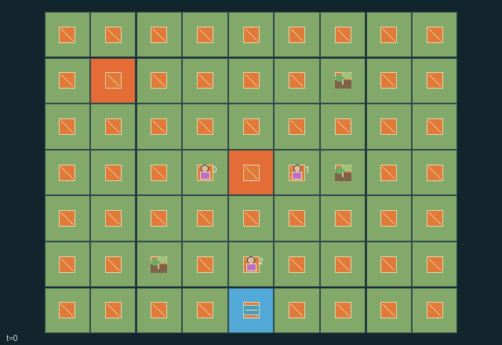

GI171 · Shared Firebreak

Original recording scope: 角色视角 · Mode: 固定脚本演示
Additional generated state replay (different trajectory / full-state debug)

Limit three-asset damage using finite labor, water, shared refills, gifts and permanent firebreaks. Each crew privately values one asset four and other assets one.
Identity and original contract
3 independently actionable roles; 15 discrete commands per role; 291 native observation columns per role; original horizon 72 steps. Declared per-step reward range: -7 to 12. Observation regime: partially_observable.
Source SHA-256: 52f6a3b16a2849b73cb1afdfb3f68f9d27e4295944a576b1478ab16aaad6049a
The objective, rewards, population, map and horizon remain original. A preview is not a success claim.
Objective and gameplay
Limit three-asset damage using finite labor, water, shared refills, gifts and permanent firebreaks. Each crew privately values one asset four and other assets one.
Clearing changes delayed downwind damage to peer-valued assets. Water gifts and shared refill competition change peer opportunities.
- Move, spray, clear own non-burning fuel, refill near the shared reservoir, or give water to an adjacent crew.
- Each active action costs one labor except clearing costs two. Rest restores two up to eight.
- Spray consumes one water. Capacity is four. Shared refills and gifts settle in rotating role order.
- Every third transition, burning fuel decreases and surviving fire spreads one cell downwind into remaining fuel. Wind rotates every six ticks.
- Clearing permanently removes fuel. Burning assets lose one health per transition. Priority-weighted penalties and extinction rewards create different valuations.
- Extinction, all assets lost, or horizon 72 ends the episode. Cells and crew state are local; private priorities remain hidden.
Ending: Fire extinct or all assets lost; otherwise horizon 72. Natural termination takes horizon priority.
What this game explores
Information, sensing & communication: Who knows a fact, when it was measured, and whether it was communicated are separate state variables. Test memory or communication using only the same role-visible evidence.
Resource commons & externalities: An action changes a persistent resource or burden that another role also encounters. Compare extraction with maintenance and record the downstream resource trajectory.
Survival, protection & rescue: Protection and repair alter another role's future feasible actions. Record losses, exposure, rescue and infrastructure as well as delivery; survival is determined by the actual kernel.
These are questions supported by rule structure, not observed learning effects.
Play it: operating walkthrough
crucibles play --game gi171Keep Python running and open its printed address. Select this game, set a seed and press Create session. The game itself is always English.
Assign a role range to Host with Assign / take over, or Assign all roles. Invite a second participant with Create player invitation, then assign a disjoint subset. Every original role is available.
For every owned role choose a legal command and press Queue. Arrow keys / WASD queue a declared directional action for the current role camera when available. Space or Advance one joint step advances everyone together. Non-directional games use the selectors.
Unqueued roles use the labelled untrained uniform-legal policy. Take over or release roles before the next step without resetting. Full-state debug is privileged and permanently logged; role cameras preserve permissions. Close the session to retain logs. Server restart does not restore sessions.
Complete command reference
IDs and English labels exactly match the manifest. Availability depends on role, resources, location and phase. An available action can still have no productive effect.
0·Rest: recover two labor
1·Move north
2·Move east
3·Move south
4·Move west
5·Spray north adjacent cell
6·Spray east adjacent cell
7·Spray south adjacent cell
8·Spray west adjacent cell
9·Clear own non-burning fuel into permanent firebreak
10·Refill up to two water near shared reservoir
11·Give one water to adjacent crew 0
12·Give one water to adjacent crew 1
13·Give one water to adjacent crew 2
14·Spray own burning cell
Roles and capability identifiers
These original role names describe capabilities, not interchangeable skins. Check each owned role's legal selector before planning handoffs.
agent_0·Crew 0 with private sampled priority zone
agent_1·Crew 1 with private sampled priority zone
agent_2·Crew 2 with private sampled priority zone
Information and observation permissions
Own sampled priority is private. Cells and other crew state have Manhattan radius three; hidden values -1. Wind, reservoir stock and asset health are public. Scene events expose only public channels.
The GIF is full-state debug and may reveal hidden entities or private state. Train on obs[agent], not the picture, state tree or another role's private row. Field slices and visibility are in the original manifest.
Reinforcement-learning integration
import jax
from crucibles_jaxmarl import make
env = make("gi171")
key = jax.random.PRNGKey(0)
key, rk, ak, sk = jax.random.split(key, 4)
obs, state = jax.jit(env.reset)(rk)
actions = env.sample_actions(ak, state)
obs, state, rewards, dones, info = jax.jit(env.step_env)(sk, state, actions)
done = dones["__all__"]Observations are float32 vectors of width 291; actions are scalar int32; masks have 15 entries. Supply all 3 roles each transition. Masked sampling is an engineering reference, not a trained learner.
step_env retains terminal data without reset. step performs outer autoreset and keeps terminal data in info["raw_state"] and info["raw_observation"]. Use dones["__all__"] for episode boundaries; separate completion, failure and time limit in analysis.
JIT or vmap equal identities and shapes. Split independent reset, policy and transition keys. Group different shapes explicitly; do not shrink the population or horizon. Host rendering stays outside training.
Training questions and fair evaluation
Define valid completion from the objective before fitting. Preserve original rewards and also report real deliveries/services, losses, resource state, unresolved episodes and per-role returns. Animation is not a reward signal.
Who knows a fact, when it was measured, and whether it was communicated are separate state variables. Test memory or communication using only the same role-visible evidence.
An action changes a persistent resource or burden that another role also encounters. Compare extraction with maintenance and record the downstream resource trajectory.
Protection and repair alter another role's future feasible actions. Record losses, exposure, rescue and infrastructure as well as delivery; survival is determined by the actual kernel.
Compare memory, communication or centralized critics under matched actor information. Declare critic access; keep actor inputs role-filtered. Match partner/opponent distributions, masks, compute and checkpoint selection. Final tests never enter fitting or selection.
Independent training runs or source-pairing blocks are inferential units; episodes from one policy are not independent training replications. Save hashes, keys, versions, device, time and cost. Negative, zero, failed and indeterminate outcomes are valid. No trained checkpoint or target score is supplied.
Classification and evidence
Overlapping editorial labels are reading aids, not proof of novelty, difficulty, strategic equivalence or learning effects.
- Information, sensing & communication
- Evidence
manifest.task.objective: Limit three-asset damage using finite labor, water, shared refills, gifts and permanent firebreaks. Each crew privately values one asset four and other assets one.
- Evidence
manifest.task.observation_access: Own sampled priority is private. Cells and other crew state have Manhattan radius three; hidden values -1. Wind, reservoir stock and asset health are public. Scene events expose only public channels.
- Evidence
scene.rules.5: Extinction, all assets lost, or horizon 72 ends the episode. Cells and crew state are local; private priorities remain hidden.
- Resource commons & externalities
- Evidence
manifest.task.objective: Limit three-asset damage using finite labor, water, shared refills, gifts and permanent firebreaks. Each crew privately values one asset four and other assets one.
- Evidence
manifest.task.interaction: Clearing changes delayed downwind damage to peer-valued assets. Water gifts and shared refill competition change peer opportunities.
- Evidence
manifest.actions.10: Refill up to two water near shared reservoir
- Survival, protection & rescue
- Evidence
manifest.task.objective: Limit three-asset damage using finite labor, water, shared refills, gifts and permanent firebreaks. Each crew privately values one asset four and other assets one.
- Evidence
manifest.task.interaction: Clearing changes delayed downwind damage to peer-valued assets. Water gifts and shared refill competition change peer opportunities.
- Evidence
manifest.actions.9: Clear own non-burning fuel into permanent firebreak
Source, receipts and preview limits
The additional generated state GIF replays saved untrained legal actions through the original kernel. At most 25 actual endpoints include initial and terminal state; no invented interpolation. It is full-state debug, not the role observation. Where an original scene preview exists, it is displayed first with its own recorded information scope. The two recordings may use different trajectories and views.
Original source, observation slices, manifest and mechanism
Native receipt · Presentation receipt
Engineering passes do not establish learning. Nonzero floating differences remain recorded and undetermined; no new tolerance was introduced. Human scores remain unverified.